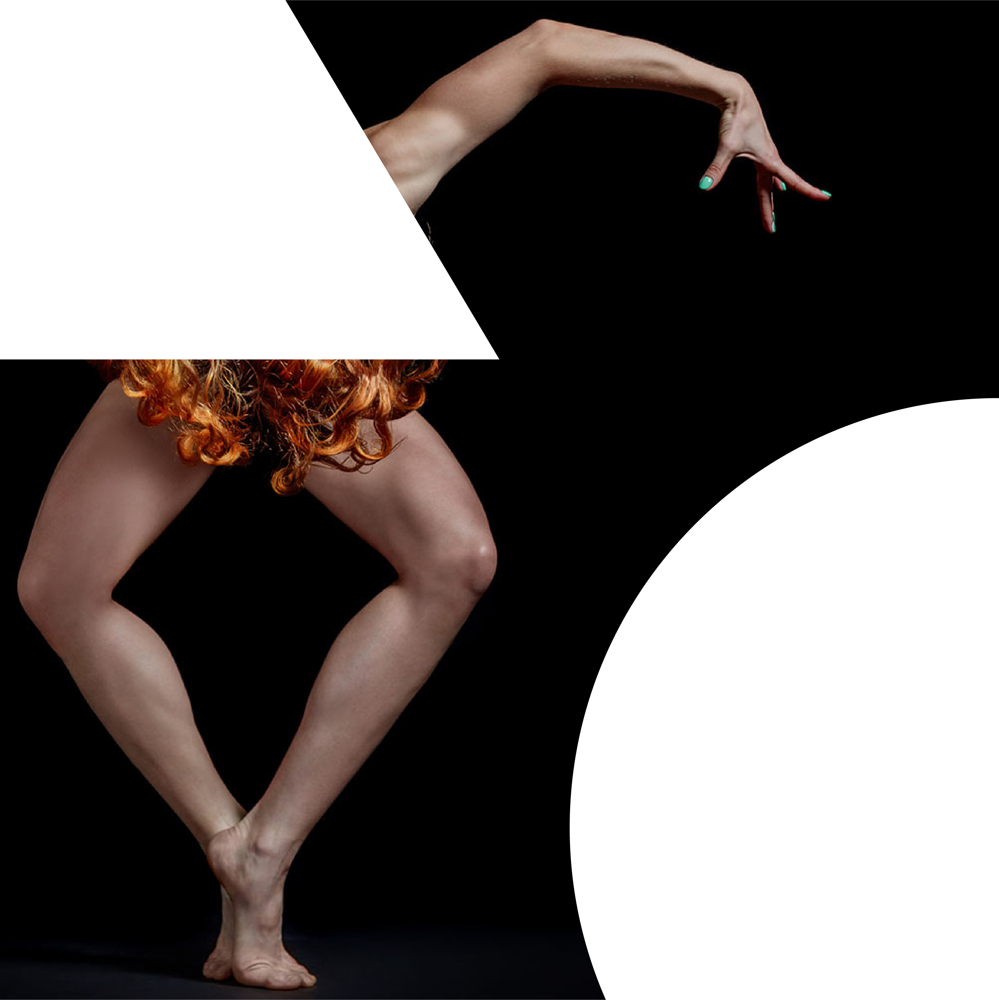

Sevilla · Teatro de la Maestranza
15 — 30
Mayo
2025

Manifiesto
En los márgenes, en el paso cotidiano, en la grieta entre un lugar y otro: allí aparece CONTRAFORMA, un festival de danza contemporánea que irrumpe en el espacio urbano para revelarse donde menos se espera. No ocupa los escenarios tradicionales: los esquiva. Prefiere las calles, los pasajes, los umbrales, esos espacios "en negativo" que habitamos sin ver.
Contraforma nace del cruce entre alma, cuerpo y mente, representados por estructuras geométricas básicas, el triángulo, el cuadrado y el círculo. Sus combinaciones generan formas nuevas, libres, cambiantes —las contraformas— que actúan como símbolo de esta danza viva, matizada e indómita.
Este festival no solo muestra danza: la esconde, la filtra, la revela. La danza se transforma en una aparición, una interrupción poética que redefine la relación entre quien baila y quien simplemente pasa.
Programación
01
Vie 16 · 20:00 h
Plaza del Salvador
Apertura02
Sáb 17 · 12:00 h
Pasaje del Agua
Intervención03
Sáb 17 · 18:00 h
Patio de la Diputación
Site-specific04
Dom 18 · 11:00 h
Alameda de Hércules
Flash mob05
Dom 18 · 19:30 h
Mercado de Triana
Intervención06
Lun 19 · 21:00 h
Teatro de la Maestranza
ClausuraEspacios
Contraforma reivindica los márgenes, las esquinas, los pasillos, las explanadas o los patios olvidados como escenarios vivos y poéticos.
Cada espacio urbano elegido no es un contenedor neutral: es un cuerpo que respira, que tiene memoria, que reacciona al movimiento.
Cuerpo · Mente · Alma
El símbolo de Contraforma nace de la intersección de tres geometrías primigenias que representan los pilares de la danza contemporánea.
Cuerpo
Mente
Alma
Contraforma